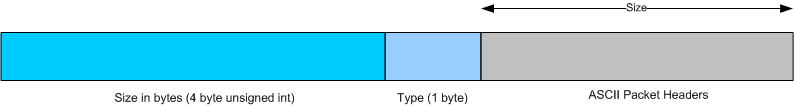

Turnstile Project
J.D.
Henderson <http://www.digitalpeer.com/projects/turnstile/>
This document and the information contained herein is provided on an "AS IS" basis and J.D. HENDERSON DISCLAIMS ALL WARRANTIES, EXPRESS OR IMPLIED, INCLUDING BUT NOT LIMITED TO ANY WARRANTY THAT THE USE OF THE INFORMATION HEREIN WILL NOT INFRINGE ANY RIGHTS, INCLUDING COPYRIGHTS, OR ANY IMPLIED WARRANTIES OF MERCHANTABILITY OR FITNESS FOR A PARTICULAR PURPOSE.
Revision History
April 10, 2004, J.D. Henderson - Initial Draft Release
The goal of this document is to define an open protocol, YAWP (Yet Another Wonderful Protocol), that implements a peer-to-peer (P2P) network providing distribution of data, secure real-time communication with trusted and untrusted users, and scalability. YAWP aims to conquer problems experienced with previous P2P protocols and their susceptibility to attack and limited widespread usage. YAWP is designed to be used in a dynamic, P2P setting where nodes are randomly joining and leaving. YAWP is largely based on the use of a distributed hash table to locate data and buddies on the network. This document defines the syntax of the protocol as well as the general algorithms used to make it work. Design decisions, anticipated behavior of the network, and possible implementation design is also discussed.
A YAWP client will be able to establish a connection to a decentralized P2P network where it can:
Communicate securely with known, verified clients in real-time.
Communicate securely with unknown, unverified clients in real-time.
Easily and quickly locate files on other nodes by the use of keyword(s).
Upload and download files from other hosts.
Start a new network and limit members of the network with the use of a workgroup key.
Communicate with 1 to millions of nodes on a single network.
In this document, terms are used that may have definitions slightly off the beaten path or very exact definitions instead of the broad range of things it might encapsulate. This is a list of terms that must be familiar to begin to understand this document in its entirety.
Key Hash - This term is used to represent the SHA-1 hash of a keyword. The keyword being a filename token or a buddy alias.
Node Hash - This term is used to represent the SHA-1 hash of a node. This is also referred to as the node id, or nid.
Next and Previous Pointer - The next pointer is the node on the network who's nid is just greater than the current node's nid. The previous pointer is the node on the network who's nid is just less than the current node's nid. Note that in an unstable network or in a seed node this is not necessarily true.
Successor - This term is used to define the owner of a key hash. This is the node with on the network that has an nid higher or equal to the key hash.
Implementation - The actual application level software using the YAWP protocol.
Node - This term encapsulates the physical unique address and nid of a machine on the network protocol and the implementation.
Alias - A user chosen buddy alias other users use to communicate with another user. This alias is not necessarily unique.
Workgroup Key - A user defined key, from 20 to 256 characters used to establish a private network. If this key is blank for a node, it is defined as not used and allows any node to connect to also not having a workgroup key.
Seed Node - A node started without connecting to any other node. The following connections to this node builds an independent YAWP network.
The YAWP protocol is a true peer-to-peer protocol. One that is serverless and has absolutely no central point. In fact, the only central point of anything is the actual location of data and buddies in many respects. The network itself is self organizing and follows a circular shape. All communication is secure and encrypted initially through public key usage and then through a symmetric block cipher. The protocol is almost completely ASCII over only TCP/IP connections.
A unique random id, the node id, is assigned to each node. This node id is determined by an existing node on the network on initial connection to the network. A hash algorithm, specifically SHA-1, is used to create node ids and key hashes. Each node on the network holds a part of the distributed hash table. Each entry in the distributed hash table contains a hash, the address of the owning node, and a small amount of information about the data represented. The values in the hash table are ultimately the address of the node who owns the key hash. Key hashes are made up of either file name keywords or usernames (see Generating Shared Hashes).
Nodes are arranged in a circular pattern, each having at least a pointer to the next node and previous node, determined by the order of the actual node hashes. A node is a successor of a key hash if it has the smallest node hash greater than or equal to the key hash. The smallest node hash on the network is also responsible for any hashes greater than the highest node hash on the network.
Node Types
This one is easy. To the network, there are no node types. Every single node is completely equal. However, to a specific node it's next and previous node pointers have significant meaning in the operation of the node and those connections (see Connections and Packets).
Server Ports
The YAWP protocol can operate on any TCP port. Addresses throughout the protocol should always be distributed in a hostname:port form. This includes any network nodes in the a hostcache. This initial, default port, is only useful for a node doing a very rudimentary search for an initial node to the network. It should be left completely up to the client to determine an appropriate port.
Workgroup Networks
While the focus of the protocol is to support a single wide area network of nodes, it is possible to create individual, private networks and lock unprivileged nodes out. This intensifies security between a trusted group of nodes and wavers some of the weaknesses of the protocol, but limits the probability of finding random files or buddies on the network. This is simply done with the use of a workgroup key that all users must know before joining the network. If a network is seeded with a network key, only nodes with that key will be able to join the network as long as it exists.
Encrypted Communications Overview
All packets sent are encrypted except for the initial packet during handshaking and joining the network. This packet only contains a public key and reveals no other information. More specifically, an RSA public key is used to setup the initial encryption scheme. Encrypted packets are encrypted from the size header down. If there is a payload header that must be converted to HEX, it will first be converted to HEX and then encrypted using the defined encryption algorithm during handshaking. Each connection, even if there are repeated connections to the same node, use a different symmetric encryption key. The workgroup key is in no way related to other encryption keys. It is simply an equality check for allowing nodes to join or communicate with the rest of the network.
The protocol is almost completely ASCII based for simplicity. All headers and data are in character format and should be read by the byte except for the type and size header. Headers are separated by new lines. Headers and corresponding value are separated by a colon (':'). The defined headers for each packet are always required. Headers should always have corresponding, valid values. In some cases, headers are order dependent. Those cases are noted, but for higher security, a packet headers (except for the type and size header of course) may be randomly ordered. Not conforming to these should call for a node to ban the offending IP address.

All connections, except for the buddy connection and in some respects the file transfer connection are similar to a solid state machine. In other words, before the connection is even made, at least one side knows exactly what kind of packets are going to be sent, what order they will be sent in, and how many of them there will be. The other side equally knows what to expect at a certain point. Packets sent out of order, or unexpected packets are also means for an offending node's IP address to be blocked.
All connections are TCP based. This design was chosen due to the inherent requirement of extensive handshaking and the need to know when some connections are dropped as an event trigger. Besides buddy connections, there are no persistent connections. Constant connections should be avoided in all other cases.
General Assumptions
The first thing on each packet is a 4 byte unsigned integer header describing the packet type. The next things is another 4 byte unsigned integer defining the packet size in bytes (from immediately after the size header to the last byte of the packet).
All node addresses are in the form address/port. It is important to note that this may not be the physical address of the node the client is on. This may be a NAT gateway or a node used to route packets through.
There are no packets that signify failure or success for the most part. Success is generally assumed, and failure is marked by dropping the connection unexpectedly. Of course, TCP/IP failure can be one of the reasons for a dropped connection, so it may be reasonable for a node to retry a connection where applicable.
Packet Types
In the following definitions, actual packet type names are used to describe the header for readability. However, the actual value that should be transferred across the wire, in the 4 byte unsigned integer type header, are the following corresponding values for each packet type:
Seeding a Network
If a node is to become a seed node (start a new network) then it will not be required to bootstrap. Instead, it creates its own nid using the same method a bootstrap node does and sets its next pointer to itself. It's previous pointer remains NULL. It will load all of its shared hashes into its local hash table. Once the server socket is started, it is ready to accept new connections. Lookups should still work at this point.
When the first connection is made, the seed node sets it's next pointer to the connecting node and sends a HELLO_NEXT packet just as if it was connecting to its new parent when joining the network.
Connection Handshaking
Handshaking is the process of initiating a connection to a node. This is always performed. The only type of connection that has some exceptions to the practice described here is the join connection (the connection a node initially makes to the network in bootstrapping where it sends a JOIN packet).
Handshaking is responsible for a number of tasks:
Sets up network compatibility.
Sets up encryption for the connection.
Filters out communication with nodes not allowed on the network (i.e. a workgroup key is in use).
Handshaking is performed as follows after the initial connection to the network when a connection is made to any other node- this even includes buddy connections:
Node A creates a TCP/IP connection to node B.
Node A sends a SYN packet. This packet contains Node A's public RSA key.
Node B responds with a ACK packet encrypted using Node A's public key. This packet includes a symmetric cipher key to be used for the rest of the connection.
Node A sends a CONFIRM packet back encrypted with the symmetric cipher and other things.
Handshaking is complete. The rest of the packets on the connections should be encrypted using the defined symmetric key.
The SYN packet and the JOIN packet are the only two packets ever sent unencrypted.
UINT[SYN]
UINT[size]
public-key:<RSA public key>
UINT[ACK]
UINT[size]
symetric-key:<symetric key to be used for the rest of the connection>
source-nid:<unique node hash>
source-addr:<host/port>
source-agent:<a string identifying a client and its protocol capabilities>
UINT[CONFIRM]
UINT[size]
source-nid:<unique node hash>
source-addr:<host/port>
source-agent:<a string identifying a client and its protocol capabilities>When a node issues a JOIN packet or an SYN packet, the receiving node should always check that the supplied workgroup key is valid and drop the connection as necessary.
Node Joining (Bootstrapping)
Bootstrapping is the process of finding the first node to connect to when trying to establish a connection to the network. This is left up to the implementation of the client for the most part. However, some type of hostcache or means of acquiring one should be implemented. This has nothing to do with finding previous and next connections. One implementation might save connections it has previously made to reputable nodes on the network as a starting point.
A node must first find any random node on the network to become part of the network. Once a node is found it will handshake with the node using the JOIN packet. A JOIN_RESPONSE packet will reply and inform the node of its nid and next pointer.
UINT[JOIN]
UINT[size]
source-agent:<a string identifying a client and protocol capabilities>
source-addr:<host/port>
wrkgrp-key:<optional, the private workgroup key to join the network>
UINT[JOIN_RESPONSE]
UINT[size]
nid:<SHA-1 node hash>
next-nid:
next-addr:
source-nid:
source-addr:The node id is generated by the bootstrap node by creating a SHA-1 hash of the following string:
Node Id = HASH([IP Address determined by remote host]+[Unix timestamp]+[10 random digits (0-9)])
This is how all node ids are created, whether by the bootstrapping node or a seed node.
Once a node has bootstrapped it now has a nid and a parent to go and connect to. In order to successfully insert the node into the network, there are a sequence of events that must happen.
Send the node it is assigned to a HELLO_NEXT packet. That node will then send a BYE_PREVIOUS packet to its current previous pointer and make it aware of the new node.
The previous node will then send a HELLO_NEXT packet to the new node. At this point all nodes have settled out there next and previous pointers.
The next node will then copy some of its hash table to the new node using the INSERT packet.
UINT[HELLO_NEXT]
UINT[size]The node is now on the network, but it is not officially a part of the network. This will not happen until the parent's previous node stabilizes and recognizes that the new node exists. See section Stabilization for information on how this happens.
Node Leaving
In order for a node to properly leave the network, there are three main things it must do (1) send an INSERT packet to its next pointer containing all hashes in the local hash table, (2) send a BYE_PREV packet to its current previous, and (3) Send a BYE_BUDDY packet to all buddies that are currently online to alert them that the buddy is leaving. When the previous receives the BYE_PREV packet, it should simply immediate initiate the stabilize routine. This is a pure optimization to speed up stabilization. If this BYE_PREV does not get sent, the network will eventually stabilize when the next stabilize interval comes around for that previous node. However, as noted when describing stabilization, there does exist the possibility for lookups to not work correctly when the network is not stable.
If the node disappears from the network improperly (a.k.a. lost network connection or crashed), the stabilization routine will account for this for the most part. The buddy update routine will make up for notifying buddies that were not notified of the leave. The hashes lost by the malfunctioned, lost node were already replicated in its parent so they are not lost. The only thing that is really lost is the data the node had, which hashes out on the network now point to.
Lookups
Lookups encompass both the location of the successor of a hash and data associated with a hash if it exists by jumping to different nodes in the network. When a node wishes to lookup a hash on the network, with the intent of finding either the successor or values, it must first find a starting place on the network. The next pointer may be used as a last resort, however, the finger table is a more optimal place to find a starting node. The finger table should be consorted for the smallest nid higher than the hash being searched for and that node should be queried. If that node fails or is unreachable, it should be removed from the finger table and the next pointer should be tried. The querying node will connect and send a QUERY packet containing the hash to be searched for.
UINT[size]
UINT[QUERY]
hash:<the hash to query for>The receiving side of the query will first determine if it is the successor of the hash. In most cases, if the hash is between the current node's nid and it's previous pointer, then it is considered the successor. There are two exceptions to this rule. If the node being queried is a seed node and there are no other nodes on the network, it is automatically the successor of any query. Also, at the point where the tail meets the end of the circle, and the previous pointer is greater than the current node's nid, the node is considered to be the successor if the hash is less than its nid or the hash is greater than it's previous. This basically means that the smallest nid on the network is responsible for both hashes smaller than itself and hashes greater than the largest node on the network. If the node determines that it is the successor of the hash, it will consort its hash table. If it does not have at least one hash matching the query, it will return a RESPONSE_SUCCESSOR packet.
UINT[size]
UINT[RESPONSE_SUCCESSOR]If it has one or more hashes, it will return a RESPONSE_SUCCESS packet.
UINT[size]
UINT[RESPONSE_SUCCESS]
hash:<hash>
node:<host/port>
info:<hash info>
hash:<hash>
node:<host/port>
info:<hash info>
...The RESPONSE_SUCCESS packet lists a tuple of 3 headers for each hash it contains matching the requested hash. These headers must be in the order defined: hash, node, info and repeated for each hash. There should always be at least one response. With this response, the querying node now knows where to get the data for the hash and some extra information about the data being pointed to (if any real data exists at all). In summary, if the querying node receives a RESPONSE_SUCCESS or a RESPONSE_SUCCESSOR packet, then the queried node is, in fact, the successor. If the node determines that it is not the successor, it will consort its finger table for the smallest nid higher than the hash being searched for and return a RESPONSE_JUMP packet.
UINT[size]
UINT[RESPONSE_JUMP]
jump:<host/port of a node to jump to>
jump:<host/port of a node to jump to>
...
jump:<host/port of next pointer>If it does not have such an nid in it's successor table, it will return a list in descending nid order of nodes from its finger table, plus its next pointer as the last one on the list (the next pointer may or may not be included in the finger table depending on implementation). The list should never be more than 5 nid's and never less than 1 (the next pointer) and the last node listed must always be the queried node's next pointer.
The queried node will repeat this process, creating a new connection to each node returned in a jump packet, until it receives a packet identifying the successor. If a node can not be contacted from the jump packet, the next one is simply tried until they are all tried. If they are all tried and all fail, the implementation has the option of waiting a short while and trying again, or considering the hash not found. This will happen in some cases if the network is not stabilized, but is rare.
A lookup is the process of finding both the owner of a particular hash and the position of the hash on the network. This is useful for finding what nodes have the data for a particular hash, or to find the successor for a particular hash. Lookups are performed only by the initiating node, and are not recursively passed through the network. In other words, the node doing the lookup starts at a magic node (see Finger Table), gets the response, and if necessary repeats the process with the node in the reply until a RESPONSE_SUCCESS or RESPONSE_END is received.
In summery, the general steps to find the successor of a key are:
Hash the key.
Start at a random place and work clockwise to find a node whose hash is closest but not greater than the key hash.
On a RESPONSE_SUCCESS or RESPONSE_SUCCESSORS reply the successor has been found.
Inserting Hashes Into the Network
Inserting hashes into the network involves two basic steps. The first is to do a lookup, and find the successor of the node (the successor is found if a RESPONSE_SUCCESSOR packet or a RESONSE_SUCCESS packet is replied). The second step is to simply send an INSERT packet to the found successor.
UINT[type]
UINT[size]
hash:<SHA-1 hash of the key>
node:<host/port>
hash:<SHA-1 hash of the key>
node:<host/port>
...There is much room for optimization here when a node has a list of hashes it needs to insert. It has to lookup each hash separately and insert them separately. It is important to insert the hashes as soon as the lookup is complete, however, it is a nice optimization to do all of the lookups first, and then insert the hashes while paring the hashes up that have the same successor. In other words, this will decrease the number of inserts that have to be done in the case that some of the hashes that needed to be inserted have the same successor.
When a node receives a INSERT packet, it simply adds the list of hashes to its local hash table, making sure to duplicate no hashes that have matching tuples (hash, node, info) are added. All elements of the hash must be compared. In order to make up for the lost hashes incase the receiving node were to incorrectly leave the network, an extra step should be performed. Whenever an insert packet is received, it should handle it as usual, but replicate the INSERT packet and send it to its next pointer. This provides at least a little bit of redundancy for all hashes.
Generating Filename Hashes
All file names shared and searched for are case insensitive. To ease use, exact, full file names are not hashed. It is very unlikely that a requesting user will know the exact file name wanted. To ease this problem, file names are broken up into tokens and each token is hashed. The result, is one or more hashes for a single file. This increases the number of hashes in the distributed hash table, but the cost is well worth it. Users can now search for “britney” instead of “britney_spears.mp3.” File names should be tokenized with any delimiters that are not A-z or 0-9. A small subset of this may be chosen for simplicity, including the following delimiters: '_', '-', '.', and ' ' (space). File extensions should not be used and no tokens less than 3 characters should be used. These restrictions disallows searching for files of a particular type initially, however a client implementation could simply filter results to include a specific file type. File hashes are represented with the following three fields:
hash (the token hash)
node (the address of the node responsible for the hash)
info (more information about the hash in the following format: “FILE:filename:filesize in bytes:md5”)Generating Buddy Hashes
Buddy hashes are hashes inserted into the distributed hash table in order for buddies to locate and communicate with each other. These are similar to file values in the hash table but the information part is defined a little differently. Buddy hashes are represented with the following information:
hash (the token hash)
node (the address of the node responsible for the hash)
info (more information about the hash in the following format: “BUDDY:alias:public key:profile”)If a client has another classification of hash it would like to insert, it simply needs to define a new first field (as opposed to BUDDY or FILE) and handle lookup results containing those.
Stabilizing the Network
When a new node joins the network, or a node leaves the network, it is the responsibility of other nodes to notice this for the most part. This design decision was made in part to handle failed nodes that disappear without properly leaving the network as well as those that leave properly. There are basically two types of stabilization procedures, one is repeated a smaller time interval than the other simply for optimization.
Stabilization Routine 1
This routine covers noticing new nodes on the network and adjusting next and previous pointers as necessary. It also handles the transfer of hashes from parent to child and the updating of the successor table.
This should be performed every 15 minutes, or when an event occurs that may require it. The purpose of this is to notice new nodes on the network, which may require that finger tables be updated and successor tables be updated. Node n should simply send a STAT packet to the parent and get the STAT_RESPONSE packet.
UINT[STAT]
UINT[size]
UINT[STAT_RESPONSE]
UINT[size]
If the previous in the response is not node n, then the node is the new successor. If node n determines that it has a new successor, it should immediately run this routine again until it gets a response that says it is the predecessor.
When a node n notices it has a new parent, it sends its new parent a HELLO_PARENT packet. It is not necessary to send a HELLO_PARENT packet more than once to the same node. The response to this packet will simply be an INSERT packet containing 0 or more hashes to insert. These hashes are now the responsibility of node n. If the connection is dropped it is probably better for node n to just reconnect to the network by bootstrapping.Stabilization Routine 2
This should be performed once every 12 hours. The purpose of this is to make sure that the hashes the current node is responsible for, actually point to live data on the network. It also updates the finger table in the process and weeds out those nodes that no longer exist on the network.
Buddy Connections and Instant Messaging
Buddy connections are on a per buddy basis. The nodes may have previously connected to the buddy before or they may have not. The buddy is identified by handshaking and this connection is setup strictly to exchange messages. When the connection is dropped, the buddy is simply considered disconnected and not offline.
IM_CONNECT
IM
IM_CLOSED
UINT[MESSAGE]
UINT[size]
payload:<newline>
<html encoded message; there are no limitations to what can be in here so escaping is not necessary>
File Transfer
When a node wants to download a file, and it has the node IP address from a lookup, it sends a REQUEST packet to the node owning the file.
UINT[REQUEST]
UINT[size]
file-name:<the complete name of the file to get>
file-md5:<the MD5 hash of the file>
file-start:<first byte of the file to get>
file-end:<last byte to get of the file>If the node does not have the file requested, by comparing filename and MD5, it should simply drop the connection. If it does have the file, from this point on during the connection, the requesting node may then request absolutely any file chunk in any order by sending a CONT packet.
UINT[CONT]
UINT[size]
start:<starting byte>
end:<ending byte>The CONT packet requests a file chunk starting at byte start and ending at byte end. Start should never be equal to or greater than end. The difference between start and end, the file chunk size, may never be higher than 20kb. Note that this is not the actual packet size, but the number of bytes represented by the actual file chunk data. When the node containing the file receives the CONT packet, it will read the file chunk and send it back in a FILESEG packet.
UINT[FILESEG]
UINT[size]
payload:<BASE64 encoded file chunk>The FILESEG packet contains nothing but a payload header of which has the HEX encoded file chunk. It is important to note that the HEX encoding happens before any overlying encryption on the packet. Two CONT packets should never be sent in a row and two FILESEG packets should never be sent in a row. They are always to rotate, in the order CONT, FILESEG. When the requesting node is finished requesting file chunks, it will simply drop the connection.
There are some limitations that must be added to the transfer of these packets. A node may never request more than the file size during the connection. As stated before, the file chunks can literally be requested in a random order, but it can never request more file chunks than the size of the file in the first place in a single connection. If it is necessary, create a new connection. The ability for nodes to request any file chunk gives an implementation the ability to download different file chunks from different nodes at the same time.
Finger Table
Currently, the finger table is simply a cache of known hosts on the network. There are optimizations that will be added to this in the future. The finger table is simply a list of nids and corresponding node addresses that the current node has connected to. It is left up to the actual implementation, but any node connected to on the network deemed a proper and up node may be added to the finger table. When the current node goes to perform a lookup, it can consult the finger table for an optimal node to start at. This is done by choosing the node with the highest nid less than the hash being looked up.
Next Table
A next table is kept to ensure redundancy when keeping track of a nodes current next pointer. In the event a node, or nodes in a row, improperly leaving the network, a node should be able to locate its new next pointer up to 5 nodes away. The next table is a simple ordered list, with a max of size 5, of next pointers for a particular node. This list is to be used in stabilization routine 1. If a node ever has a problem contacting its successor (the first node in the successor list), it should assume that its successor is dead and should try to locate the next successor in line. This is an optimization that aims to prevent network splits, and ultimately failure.
Blocking & Banning a Node
Blocking nodes is a sensitive action. Because of the ability for it to easily be abused, it can't be used in the fullest definition. If a banned list was to be transferred between nodes with the intent to block nodes unnecessarily, or some nodes had a node on the banned list while other didn't then network failure is the ultimate consequence. The simple solution in place is to simply drop the connection immediately if the protocol is violated in any fashion. Implementations are encouraged to notice improper protocol usage and use it, while dropping connections with those that don't.
The do exist some known limitations and problems with the protocol as defined in this document.
It is easy to identify the IP address of nodes that contain certain files for possible attack.
It is easy to find out the IP address of buddies for possible attack.
A node may lie about what files it has or even distribute fake hashes.
It is possible for separate networks to be established, instead of having one wide network. This is a limiting factor and the bootstrapping process determines this.
Distribute hostcache.
The ability to have multiple networks connected in such a way that only inserts are allowed in the respective networks, while lookups and file transfers are allowed to span multiple networks.
Allow the optional random routing of all communications for an anonymous effect. This will include node ranking for selecting a routing node.
Possibly distribute data and not just hashes. This builds on anonymity of source and would allow more files to be online at any given time.
http://rfc-gnutella.sourceforge.net/developer/testing/index.html
http://www.ovmj.org/GNUnet/protocol_p2p_core.php3?xlang=English
http://www.ovmj.org/GNUnet/protocol_p2p_core.php3?xlang=English#SKEY
Standards
[RFC2119] "Key words for use in RFCs to Indicate Requirement Levels" <http://ietf.org/rfc/rfc2119.txt>
Artificial Intelligence
"The Anthill Project" <http://www.cs.unibo.it/projects/anthill/>
http://joost.student.utwente.nl/eyckelhof/thesis/
PKI
"Open Source PKI Book" <http://ospkibook.sourceforge.net/>
Encryption
Existing P2P Protocols
"Why Gnutella Can't Scale. No, Really" <http://www.darkridge.com/~jpr5/doc/gnutella.html>
"Anonymous Peer to Peer Routing Protocol" <http://metro.yak.net/peer-route/>